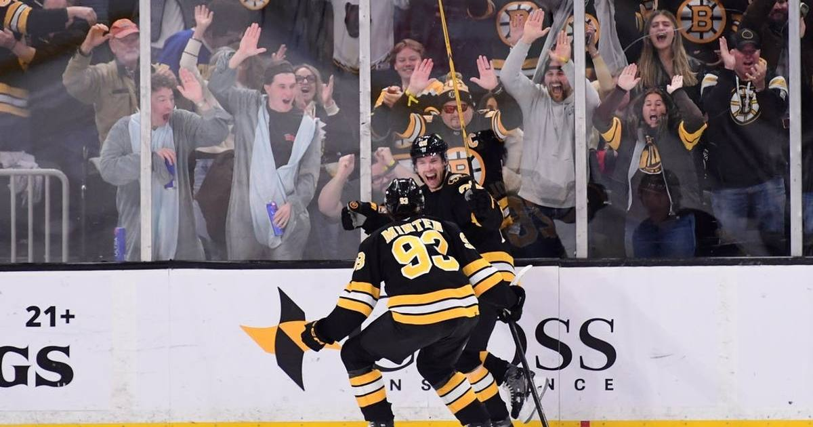

Bruins -1.5 (+114): Boston's Four-Game Home Streak Meets a Blackhawks Team That Can't Score
Boston is 9-4-1, riding a four-game home winning streak and averaging 4.1 goals over its last ten. Chicago is 4-9-0, has lost four of five, and scored six goals across that stretch. Lay the 1.5 at plus money.

Game slip: Chicago Blackhawks at Boston Bruins
• Matchup: Chicago Blackhawks (4-9-0) at Boston Bruins (9-4-1)
• Time/channel: Saturday, 1:00 p.m. ET, ESPN+, from TD Garden in Boston
• Odds (ESPN/DraftKings): Bruins -225; Blackhawks +185; total 6.5; puck line Bruins -1.5 (+114)
• Injury report: Bruins — none listed. Chicago — Bowen Byram out (upper body), Ryan Ellis out for the season (back). Boston's Jeremy Swayman is the projected starter; Chicago's starter was not confirmed at preview time.
• Storylines: (1) Boston is trying to extend a four-game home winning streak, and over its last ten games the Bruins are 7-2-1, averaging 4.1 goals while giving up just 2.1. (2) Chicago has lost four of its last five and scored only six goals across that stretch — 2.08 goals per game on the season, on just 21.6 shots. (3) David Pastrnak leads Boston with 18 points (7 goals, 11 assists), and the projected top line with Pavel Zacha and JJ Peterka gives the Bruins three finishers against a thin Chicago blue line missing Byram.
The bet: Bruins -1.5 (+114)
This is a mismatch play at plus money. Boston's last-ten profile — 4.1 goals for, 2.1 against — against a Chicago team scoring barely two goals a night is the kind of gap that produces multi-goal wins, not coin flips. The Bruins are also the healthier team by a mile: no injuries listed, at home, in a matinee where their depth should wear Chicago down over three periods.
The honest caveat: Boston has lost two straight (2-1 in Carolina, 4-1 in St. Louis), and Swayman was pulled after giving up four goals on 18 shots in the St. Louis loss. If Chicago's goaltending steals the first period, a one-goal game late is live. But at +114, with this goal differential and this home streak, the puck line is the value side.
If gambling stops being fun, call 1-800-GAMBLER.
Sources: BetLegendPicks — NHL slate, October 31, Bleacher Nation — Bruins vs. Blackhawks, NHL.com — projected lineups